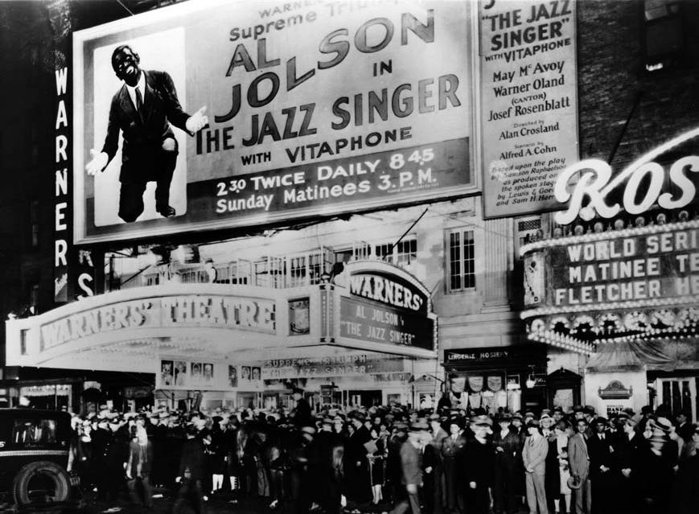
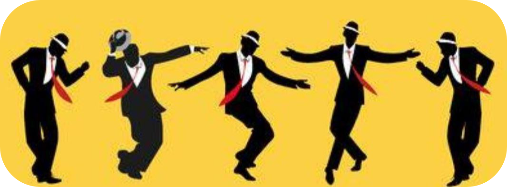

D
eux styles musicaux sont caractéristiques des USA : Le Blues et le Jazz. Le cinéma s'y intéressa très tôt... et l'exploite encore !.
Il existe dès le début d'indéniables traits communs entre le Jazz (et le Blues) et le Cinéma. Tout d'abord, ils sont nés en même temps, à la fin du 19ème siècle aux Etats-Unis.
A partir de l'arrivée du "parlant" en 1929, la musique sera toujours au cinéma. Et cela est toujours vrai aujourd'hui.

Présenté en grande pompe le 6 octobre 1927, "Le Chanteur de jazz" reçoit un accueil triomphal.
L a ségrégation sévit partout, et jusqu'à Hollywood empêchant acteurs et musiciens noirs d'apparaître dans les films populaires, si non à titre anecdotique. Il faut rappeler que le code Hays interdisait le mélange des races à l'écran et que, dans les Etats du Sud, les producteurs qui se risquaient à faire apparaître ne serait-ce qu'un seul noir avaient de fortes chances de voir leur film censuré. Ainsi, à proprement parler, le musicien noir est mis à l'écart de la scène, comme dans "Hollywood Hotel" (1938) où l'orchestre de Benny Goodman défile en pleine rue, tandis que ses musiciens noirs sont maintenus hors-champ, ou bien, quant il est toléré, il est cantonné dans un rôle de bouffon comique et non civilisé.
P ar la suite, avec la vogue des comédies musicales dans les années 30, le jazz joués dans les films ("King of Jazz" (1930) avec Bing Crosby ou "Swing Time" (1936) avec Fred Astaire) est toujours très aseptisé, "purgé de toute violence et de toute subversion où l'improvisation n'a pas sa place". Les années trente sont celles sont celles ou le cinéma normalise le jazz, pour le rendre acceptable pour tous les publics. A quelques exceptions près, les seuls prestations à l'écran des grands musiciens, comme comme Louis Armstrong ou Duke Ellington, ont lieu dans des races movies, films à petit budget, interprétés par des Noirs et destinés à un public de noirs (mais évidement financés par des producteurs blancs). La seule exception notable est le film de King Vidor, Halleluyah ! (1929), avec son plateau d'acteurs exclusivement noirs, voulu apporter un démenti au principe selon lequel "les noirs ne peuvent être employés à l'écran que comme cireurs de chaussures, comme serviteurs ou comme dockers".
"Hallelujah"(1929) - Bande-annonce originale
@fred
https://fred-hub159.github.io/pourquejemesouvienne

Les commentaires sont soumis à modération et doivent être approuvés avant publication.